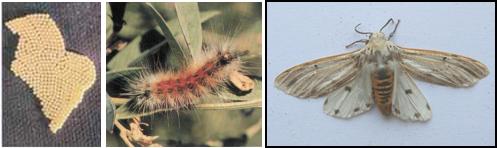

| Home |
| GROUNDNUT |
| 1. Aphids |
| 2. laef hopper |
| 3. thrips |
| 4. red hairy caterpiller |
| 5. leaf miner |
| 6. tobacco caterpiller |
| 7. gram pod borer |
| 8. pod borer (Ear Wig) |
| 9. pod bug |
| 10. Bud borer |
| 11. stem borer |
| 12. termites |
| 13. white grub |
| Questions |
| Download Notes |
PESTS OF GROUNDNUT :: Major Pests :: Red Hairy Caterpiller
4. Red hairy caterpillar: Amsacta albistriga (Arctiidae: Lepidoptera)
Distribution and status: Oriental in distribution including India. It is a serious pest under rainfed conditions on pulses in Rajasthan and groundnut in southern part of India. Amsacata albistriga is predominant in South India while A. moorie dominates northern parts of the country. Seasonal outbreak largely depends on the climatic conditions and local agricultural practices of the region concerned. It takes place twice a year May-June and August-October. It’s outbreak occurs only once in Rajasthan during August- October
Host range: Maize, sorghum, green gram, sesame, pearl millet, finger millet, groundnut, sunhemp, castor, cotton.
Damage symptoms: The larvae feed on the leaves gregariously by scraping the under surface of tender leaflets leaving the upper epidermal layer intact in early stages. Later they feed voraciously on the leaves and main stem of plants. They march from field to field gregariously. Severely affected field looks as though they are grazed by cattle. Sometimes it results in the total loss of pods. They also feed on sorghum, cotton, finger millet, castor, pulses and cowpea, etc.
Bionomics: Adults are medium sized moths. In A. albistriga forewings are white with brownish streaks all over and yellowish streaks along the anterior margin and hind wings white with black markings. A yellow band is found on the head. In A. moorei all markings are red in white wings. On receipt of heavy rains, about a month after sowing in kharif season, white moths with black markings on the hind wings emerge out from the soil in the evening hours. It lays about 600-700 eggs eggs on the under surface of the leaves. Egg period is 2-3 days. Tiny greenish caterpillar feeds on the leaves gregariously. A full grown larva measures 5 cm in length, reddish brown hairs all over the body arising on warts. The larval period is 40-50 days. With the receipt of showers, the grown up larva pupates in earthern cells at a depth of 10-20 cm. They pupate mostly along the field bunds and in moist shady areas under the trees in the field and undergo pupal diapause till the next year.
 |
ETL: 8 egg masses/100 meter
Management
- Organize campaign to collect and destroy the pupae after summer ploughing on receipt of showers.
- Grow cowpea or red gram as an intercrop to attract adult moths to lay more eggs.
- Set up 3-4 light traps and bonfires immediately at the onset of rains at 4 weeks after sowing in the rainfed season to attract and kill the moths and to know brood emergence.
- Collect and destroy egg masses in the groundnut, cowpea and redgram.
- Collect and destroy gregarious early instar larvae on lace like leaves of inter crops viz., red gram and cowpea.
- Organize campaign by involving school children (or) general public to collect and destroy the migrating grown up caterpillars from the field.
- Dig out a trench around the field to avoid the migration of caterpillars, trap larvae and kill them.
- Use nuclear polyhedrosis virus @ 250 LE/ha.
- For young caterpillars - apply endosulfan 4D 25 kg/ha (or) carbaryl 10 D 25 kg/ha.
- Organize mass ground spraying in endemic areas if necessary in the case of outbreak of the pest.
- For grown up caterpillars - spray endosulfan 750 ml/ha (or) dichlorvos 625 ml/ha (or) chlorpyriphos 1250 ml/ha in 375 litres of water.